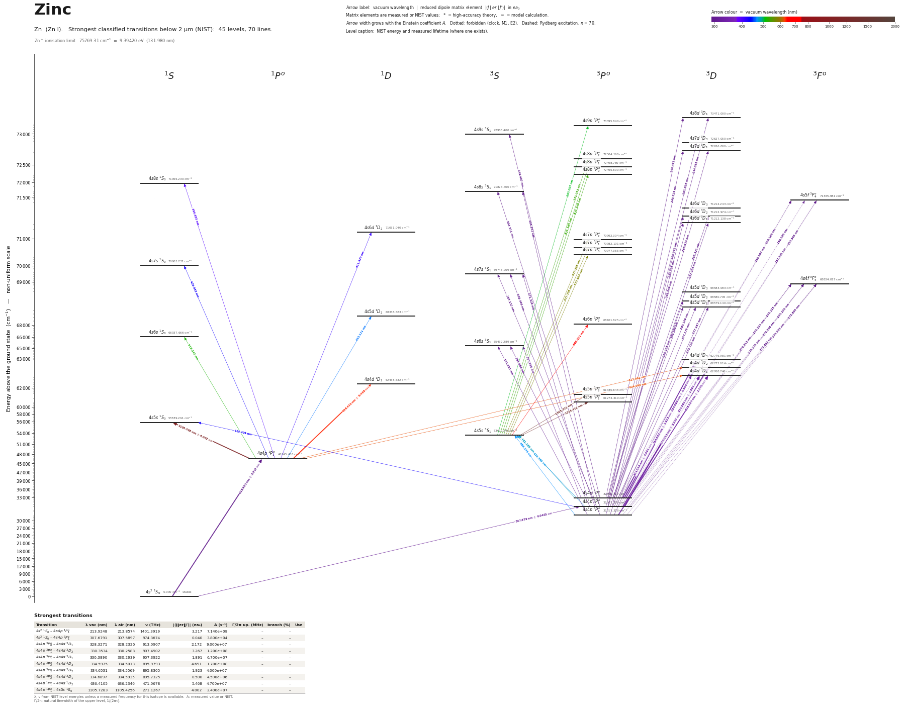

Zinc energy level diagram
Energy levels and transitions of neutral zinc (Zn I): the 70 strongest classified lines below 2 µm from the NIST Atomic Spectra Database and the 45 levels they connect, each line with its vacuum wavelength, frequency and, for 10 of them, the reduced dipole matrix element derived from the NIST transition rate. Lifetimes, hyperfine constants and isotope shifts from the literature have not been compiled for this element yet.
Hover a line or a level to isolate it, click to keep it selected. Scroll to zoom, drag to move.

Download: diagram (PDF) diagram (SVG) transitions (CSV) levels (CSV) source code

Strongest transitions of zinc
| Transition | λ vac (nm) | λ air (nm) | ν (THz) | |⟨J‖er‖J′⟩| (ea₀) | A (s⁻¹) | Γ/2π up. (MHz) | branch (%) | Use |
|---|---|---|---|---|---|---|---|---|
| 4s2 1S0 – 4s4p 1P°1 | 213.9248 | 213.8574 | 1401.3919 | 3.217 | 7.140e+08 | – | – | |
| 4s2 1S0 – 4s4p 3P°1 | 307.6791 | 307.5897 | 974.3674 | 0.040 | 3.800e+04 | – | – | |
| 4s4p 3P°0 – 4s4d 3D1 | 328.3271 | 328.2326 | 913.0907 | 2.172 | 9.000e+07 | – | – | |
| 4s4p 3P°1 – 4s4d 3D2 | 330.3534 | 330.2583 | 907.4902 | 3.267 | 1.200e+08 | – | – | |
| 4s4p 3P°1 – 4s4d 3D1 | 330.3890 | 330.2939 | 907.3922 | 1.891 | 6.700e+07 | – | – | |
| 4s4p 3P°2 – 4s4d 3D3 | 334.5975 | 334.5013 | 895.9793 | 4.691 | 1.700e+08 | – | – | |
| 4s4p 3P°2 – 4s4d 3D2 | 334.6531 | 334.5569 | 895.8305 | 1.923 | 4.000e+07 | – | – | |
| 4s4p 3P°2 – 4s4d 3D1 | 334.6897 | 334.5935 | 895.7325 | 0.500 | 4.500e+06 | – | – | |
| 4s4p 1P°1 – 4s4d 1D2 | 636.4105 | 636.2346 | 471.0678 | 5.468 | 4.700e+07 | – | – | |
| 4s4p 1P°1 – 4s5s 1S0 | 1105.7283 | 1105.4256 | 271.1267 | 4.002 | 2.400e+07 | – | – |
λ, ν from NIST level energies unless a measured frequency for this isotope is available. A: measured value or NIST. Γ/2π: natural linewidth of the upper level, 1/(2πτ).
Listed Zn transitions below 2 µm
| Lower level | Upper level | λ vacuum (nm) | λ air (nm) | ν (THz) | Type | |⟨J‖er‖J′⟩| (ea₀) | A (s⁻¹) | Branching (%) | Source of matrix element / A |
|---|---|---|---|---|---|---|---|---|---|
| 4s2 1S0 | 4s4p 1P°1 | 213.9248 | 213.8574 | 1401.3919 | E1 | 3.217 NIST | 7.140e+08 NIST | – | NIST ASD (accuracy A) |
| 4s4p 3P°1 | 4s8d 3D1 | 244.0834 | 244.0094 | 1228.2377 | E1 | – | – | – | – |
| 4s4p 3P°2 | 4s8d 3D1 | 246.4227 | 246.3482 | 1216.5780 | E1 | – | – | – | – |
| 4s4p 3P°0 | 4s7d 3D1 | 248.0486 | 247.9737 | 1208.6038 | E1 | – | – | – | – |
| 4s4p 3P°1 | 4s7d 3D1 | 249.2237 | 249.1485 | 1202.9053 | E1 | – | – | – | – |
| 4s4p 3P°2 | 4s9s 3S1 | 249.4072 | 249.3320 | 1202.0201 | E1 | – | – | – | – |
| 4s4p 3P°2 | 4s7d 3D3 | 251.6564 | 251.5806 | 1191.2770 | E1 | – | – | – | – |
| 4s4p 3P°1 | 4s8s 3S1 | 254.3112 | 254.2349 | 1178.8409 | E1 | – | – | – | – |
| 4s4p 3P°2 | 4s8s 3S1 | 256.8517 | 256.7747 | 1167.1812 | E1 | – | – | – | – |
| 4s4p 3P°0 | 4s6d 3D1 | 257.0640 | 256.9870 | 1166.2173 | E1 | – | – | – | – |
| 4s4p 3P°1 | 4s5f 3F°4 | 257.5024 | 257.4253 | 1164.2315 | HF | – | – | – | – |
| 4s4p 3P°1 | 4s5f 3F°3 | 257.5032 | 257.4261 | 1164.2279 | E2 | – | – | – | – |
| 4s4p 3P°1 | 4s6d 3D2 | 258.3207 | 258.2434 | 1160.5438 | E1 | – | – | – | – |
| 4s4p 3P°1 | 4s6d 3D1 | 258.3262 | 258.2489 | 1160.5188 | E1 | – | – | – | – |
| 4s4p 3P°2 | 4s5f 3F°4 | 260.1074 | 260.0297 | 1152.5717 | E2 | – | – | – | – |
| 4s4p 3P°2 | 4s5f 3F°3 | 260.1082 | 260.0305 | 1152.5682 | M1+E2 | – | – | – | – |
| 4s4p 3P°2 | 4s5f 3F°2 | 260.1083 | 260.0306 | 1152.5676 | M1+E2 | – | – | – | – |
| 4s4p 3P°2 | 4s6d 3D3 | 260.9337 | 260.8557 | 1148.9221 | E1 | – | – | – | – |
| 4s4p 3P°2 | 4s6d 3D2 | 260.9423 | 260.8644 | 1148.8841 | E1 | – | – | – | – |
| 4s4p 3P°0 | 4s7s 3S1 | 267.1323 | 267.0529 | 1122.2623 | E1 | – | – | – | – |
| 4s4p 3P°1 | 4s7s 3S1 | 268.4956 | 268.4159 | 1116.5638 | E1 | – | – | – | – |
| 4s4p 3P°2 | 4s7s 3S1 | 271.3289 | 271.2485 | 1104.9041 | E1 | – | – | – | – |
| 4s4p 3P°0 | 4s4f 3F°4 | 273.8023 | 273.7213 | 1094.9230 | HF | – | – | – | – |
| 4s4p 3P°0 | 4s4f 3F°3 | 273.8035 | 273.7225 | 1094.9182 | HF | – | – | – | – |
| 4s4p 3P°0 | 4s4f 3F°2 | 273.8039 | 273.7229 | 1094.9167 | E2 | – | – | – | – |
| 4s4p 3P°1 | 4s4f 3F°4 | 275.2348 | 275.1534 | 1089.2245 | HF | – | – | – | – |
| 4s4p 3P°1 | 4s4f 3F°3 | 275.2360 | 275.1546 | 1089.2197 | E2 | – | – | – | – |
| 4s4p 3P°1 | 4s4f 3F°2 | 275.2364 | 275.1550 | 1089.2182 | M1+E2 | – | – | – | – |
| 4s4p 3P°0 | 4s5d 3D1 | 275.7265 | 275.6450 | 1087.2820 | E1 | – | – | – | – |
| 4s4p 3P°1 | 4s5d 3D2 | 277.1672 | 277.0854 | 1081.6304 | E1 | – | – | – | – |
| 4s4p 3P°1 | 4s5d 3D1 | 277.1792 | 277.0974 | 1081.5835 | E1 | – | – | – | – |
| 4s4p 3P°2 | 4s4f 3F°4 | 278.2129 | 278.1309 | 1077.5647 | E2 | – | – | – | – |
| 4s4p 3P°2 | 4s4f 3F°3 | 278.2142 | 278.1321 | 1077.5600 | M1+E2 | – | – | – | – |
| 4s4p 3P°2 | 4s4f 3F°2 | 278.2146 | 278.1325 | 1077.5584 | M1+E2 | – | – | – | – |
| 4s4p 3P°2 | 4s5d 3D3 | 280.1689 | 280.0863 | 1070.0419 | E1 | – | – | – | – |
| 4s4p 3P°2 | 4s5d 3D2 | 280.1876 | 280.1050 | 1069.9706 | E1 | – | – | – | – |
| 4s4p 3P°2 | 4s5d 3D1 | 280.1998 | 280.1173 | 1069.9237 | E1 | – | – | – | – |
| 4s4p 3P°0 | 4s6s 3S1 | 301.9235 | 301.8356 | 992.9417 | E1 | – | – | – | – |
| 4s4p 3P°1 | 4s6s 3S1 | 303.6663 | 303.5779 | 987.2432 | E1 | – | – | – | – |
| 4s4p 3P°2 | 4s6s 3S1 | 307.2955 | 307.2063 | 975.5835 | E1 | – | – | – | – |
| 4s2 1S0 | 4s4p 3P°1 | 307.6791 | 307.5897 | 974.3674 | E1 (intercombination) | 0.0405 NIST | 3.800e+04 NIST | – | NIST ASD (accuracy B) |
| 4s4p 3P°0 | 4s4d 3D1 | 328.3271 | 328.2326 | 913.0907 | E1 | 2.172 NIST | 9.000e+07 NIST | – | NIST ASD (accuracy B) |
| 4s4p 3P°1 | 4s4d 3D2 | 330.3534 | 330.2583 | 907.4902 | E1 | 3.267 NIST | 1.200e+08 NIST | – | NIST ASD (accuracy B) |
| 4s4p 3P°1 | 4s4d 3D1 | 330.3890 | 330.2939 | 907.3922 | E1 | 1.891 NIST | 6.700e+07 NIST | – | NIST ASD (accuracy B) |
| 4s4p 3P°2 | 4s4d 3D3 | 334.5975 | 334.5013 | 895.9793 | E1 | 4.691 NIST | 1.700e+08 NIST | – | NIST ASD (accuracy B) |
| 4s4p 3P°2 | 4s4d 3D2 | 334.6531 | 334.5569 | 895.8305 | E1 | 1.923 NIST | 4.000e+07 NIST | – | NIST ASD (accuracy B) |
| 4s4p 3P°2 | 4s4d 3D1 | 334.6897 | 334.5935 | 895.7325 | E1 | 0.500 NIST | 4.500e+06 NIST | – | NIST ASD (accuracy B) |
| 4s4p 1P°1 | 4s8s 1S0 | 396.6550 | 396.5428 | 755.8016 | E1 | – | – | – | – |
| 4s4p 1P°1 | 4s6d 1D2 | 411.4272 | 411.3111 | 728.6647 | E1 | – | – | – | – |
| 4s4p 3P°1 | 4s5s 1S0 | 429.4091 | 429.2883 | 698.1512 | E1 (intercombination) | – | – | – | – |
| 4s4p 1P°1 | 4s7s 1S0 | 429.9534 | 429.8325 | 697.2673 | E1 | – | – | – | – |
| 4s4p 1P°1 | 4s5d 1D2 | 463.1105 | 462.9808 | 647.3455 | E1 | – | – | – | – |
| 4s4p 3P°0 | 4s5s 3S1 | 468.1446 | 468.0136 | 640.3843 | E1 | – | – | – | – |
| 4s4p 3P°1 | 4s5s 3S1 | 472.3478 | 472.2157 | 634.6858 | E1 | – | – | – | – |
| 4s4p 3P°2 | 4s5s 3S1 | 481.1877 | 481.0532 | 623.0261 | E1 | – | – | – | – |
| 4s5s 3S1 | 4s9p 3P°2 | 507.0068 | 506.8655 | 591.2987 | E1 | – | – | – | – |
| 4s4p 1P°1 | 4s6s 1S0 | 518.3425 | 518.1982 | 578.3675 | E1 | – | – | – | – |
| 4s5s 3S1 | 4s8p 3P°2 | 531.0133 | 530.8656 | 564.5668 | E1 | – | – | – | – |
| 4s5s 3S1 | 4s8p 3P°1 | 531.1650 | 531.0173 | 564.4055 | E1 | – | – | – | – |
| 4s5s 3S1 | 4s8p 3P°0 | 531.2491 | 531.1014 | 564.3161 | E1 | – | – | – | – |
| 4s5s 3S1 | 4s7p 3P°2 | 577.3651 | 577.2050 | 519.2425 | E1 | – | – | – | – |
| 4s5s 3S1 | 4s7p 3P°1 | 577.7054 | 577.5452 | 518.9366 | E1 | – | – | – | – |
| 4s5s 3S1 | 4s7p 3P°0 | 577.8635 | 577.7033 | 518.7946 | E1 | – | – | – | – |
| 4s4p 1P°1 | 4s4d 3D2 | 623.9622 | 623.7897 | 480.4657 | E1 (intercombination) | – | – | – | – |
| 4s4p 1P°1 | 4s4d 3D1 | 624.0895 | 623.9169 | 480.3677 | E1 (intercombination) | – | – | – | – |
| 4s4p 1P°1 | 4s4d 1D2 | 636.4105 | 636.2346 | 471.0678 | E1 | 5.468 NIST | 4.700e+07 NIST | – | NIST ASD (accuracy C) |
| 4s5s 3S1 | 4s6p 3P°2 | 693.0206 | 692.8295 | 432.5881 | E1 | – | – | – | – |
| 4s4p 1P°1 | 4s5s 1S0 | 1105.7283 | 1105.4256 | 271.1267 | E1 | 4.002 NIST | 2.400e+07 NIST | – | NIST ASD (accuracy C) |
| 4s5s 3S1 | 4s5p 3P°2 | 1305.7208 | 1305.3637 | 229.5992 | E1 | – | – | – | – |
| 4s5s 3S1 | 4s5p 3P°1 | 1315.4123 | 1315.0526 | 227.9076 | E1 | – | – | – | – |
Reduced dipole matrix elements follow the convention A = ω³|d|²/(3πε₀ħc³(2J′+1)), with J′ the upper level. Tags show where a number comes from: measured, NIST compilation, high-accuracy theory, or a model calculation.
Zn energy levels
| Level | Energy (cm⁻¹) | J | Parity | Lifetime | gJ | Hyperfine A (MHz) | Hyperfine B (MHz) | Lifetime source | Hyperfine source |
|---|---|---|---|---|---|---|---|---|---|
| 4s2 1S0 | 0.000 | 0 | even | stable | – | – | – | – | – |
| 4s4p 3P°0 | 32311.318 | 0 | odd | – | – | – | – | – | – |
| 4s4p 3P°1 | 32501.399 | 1 | odd | – | 1.496 | – | – | – | – |
| 4s4p 3P°2 | 32890.327 | 2 | odd | – | 1.505 | – | – | – | – |
| 4s4p 1P°1 | 46745.403 | 1 | odd | – | – | – | – | – | – |
| 4s5s 3S1 | 53672.240 | 1 | even | – | 2.001 | – | – | – | – |
| 4s5s 1S0 | 55789.216 | 0 | even | – | – | – | – | – | – |
| 4s5p 3P°1 | 61274.419 | 1 | odd | – | – | – | – | – | – |
| 4s5p 3P°2 | 61330.845 | 2 | odd | – | – | – | – | – | – |
| 4s4d 1D2 | 62458.532 | 2 | even | – | – | – | – | – | – |
| 4s4d 3D1 | 62768.746 | 1 | even | – | – | – | – | – | – |
| 4s4d 3D2 | 62772.014 | 2 | even | – | – | – | – | – | – |
| 4s4d 3D3 | 62776.981 | 3 | even | – | – | – | – | – | – |
| 4s6s 3S1 | 65432.289 | 1 | even | – | – | – | – | – | – |
| 4s6s 1S0 | 66037.666 | 0 | even | – | – | – | – | – | – |
| 4s6p 3P°2 | 68101.825 | 2 | odd | – | – | – | – | – | – |
| 4s5d 1D2 | 68338.523 | 2 | even | – | – | – | – | – | – |
| 4s5d 3D1 | 68579.140 | 1 | even | – | – | – | – | – | – |
| 4s5d 3D2 | 68580.705 | 2 | even | – | – | – | – | – | – |
| 4s5d 3D3 | 68583.083 | 3 | even | – | – | – | – | – | – |
| 4s4f 3F°2 | 68833.807 | 2 | odd | – | – | – | – | – | – |
| 4s4f 3F°3 | 68833.858 | 3 | odd | – | – | – | – | – | – |
| 4s4f 3F°4 | 68834.017 | 4 | odd | – | – | – | – | – | – |
| 4s7s 3S1 | 69745.959 | 1 | even | – | – | – | – | – | – |
| 4s7s 1S0 | 70003.737 | 0 | even | – | – | – | – | – | – |
| 4s7p 3P°0 | 70977.365 | 0 | odd | – | – | – | – | – | – |
| 4s7p 3P°1 | 70982.101 | 1 | odd | – | – | – | – | – | – |
| 4s7p 3P°2 | 70992.304 | 2 | odd | – | – | – | – | – | – |
| 4s6d 1D2 | 71051.040 | 2 | even | – | – | – | – | – | – |
| 4s6d 3D1 | 71212.138 | 1 | even | – | – | – | – | – | – |
| 4s6d 3D2 | 71212.974 | 2 | even | – | – | – | – | – | – |
| 4s6d 3D3 | 71214.243 | 3 | even | – | – | – | – | – | – |
| 4s5f 3F°2 | 71335.845 | 2 | odd | – | – | – | – | – | – |
| 4s5f 3F°3 | 71335.863 | 3 | odd | – | – | – | – | – | – |
| 4s5f 3F°4 | 71335.981 | 4 | odd | – | – | – | – | – | – |
| 4s8s 3S1 | 71823.300 | 1 | even | – | – | – | – | – | – |
| 4s8s 1S0 | 71956.230 | 0 | even | – | – | – | – | – | – |
| 4s8p 3P°0 | 72495.800 | 0 | odd | – | – | – | – | – | – |
| 4s8p 3P°1 | 72498.780 | 1 | odd | – | – | – | – | – | – |
| 4s8p 3P°2 | 72504.160 | 2 | odd | – | – | – | – | – | – |
| 4s7d 3D1 | 72626.000 | 1 | even | – | – | – | – | – | – |
| 4s7d 3D3 | 72627.050 | 3 | even | – | – | – | – | – | – |
| 4s9s 3S1 | 72985.400 | 1 | even | – | – | – | – | – | – |
| 4s9p 3P°2 | 73395.840 | 2 | odd | – | – | – | – | – | – |
| 4s8d 3D1 | 73471.000 | 1 | even | – | – | – | – | – | – |
Zn⁺ ionisation limit 75769.31 cm⁻¹ = 9.39420 eV (131.980 nm)
Sources
Atoms with measured data
- Lithium-632 levels, 85 lines
- Lithium-732 levels, 85 lines
- Beryllium-915 levels, 24 lines
- Sodium-2336 levels, 106 lines
- Magnesium-2418 levels, 61 lines
- Magnesium-2518 levels, 61 lines
- Potassium-3934 levels, 84 lines
- Potassium-4034 levels, 84 lines
- Potassium-4134 levels, 84 lines
- Calcium-4035 levels, 61 lines
- Calcium-4335 levels, 61 lines
- Rubidium-8536 levels, 94 lines
- Rubidium-8736 levels, 94 lines
- Strontium-8740 levels, 70 lines
- Strontium-8840 levels, 70 lines
- Caesium-13331 levels, 79 lines
- Barium-13744 levels, 89 lines
- Barium-13844 levels, 89 lines
- Dysprosium-16339 levels, 55 lines
- Dysprosium-16439 levels, 55 lines
- Ytterbium-17118 levels, 26 lines
- Ytterbium-17418 levels, 26 lines